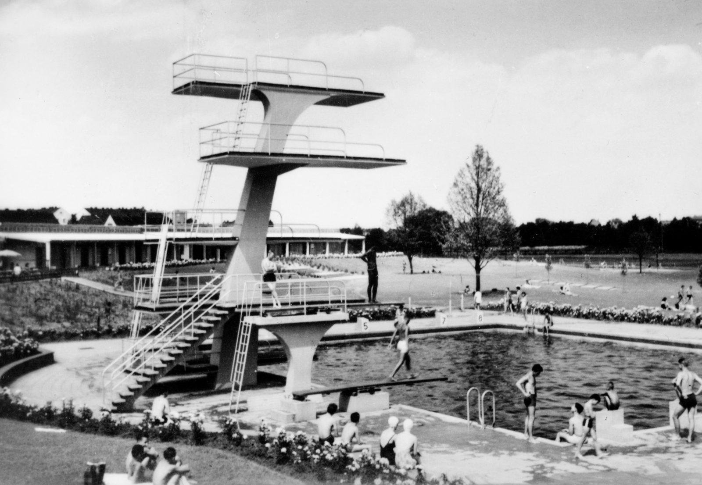
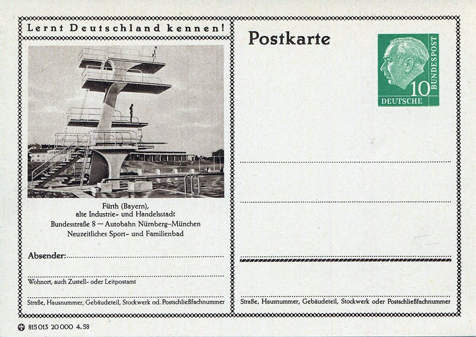

Vom Rednitzstrand zum Lago di Cerbo
Am Scherbsgraben liegen drei Bäder nebeneinander, bald soll ein viertes dazukommen: auf dem Eingang des Freibads. Eine Geschichte des Fürther Badens vom Fluss bis zum geplanten Neubau, und wer das alles eigentlich betreibt.

Zehn Meter hoch lag die oberste Plattform des Sprungturms im Sommerbad. Fast fünf Jahrzehnte stand der Betonturm am Scherbsgraben, 1958 warb Fürth mit ihm auf einer Postkarte der Bundespost als „neuzeitliches Sport- und Familienbad“. Am 23. September 2005 wurde er trotz einer Bürgerinitiative abgerissen. 2013 nannte Oberbürgermeister Thomas Jung das rückblickend einen Fehler.
Geblieben ist der Spitzname: Im Volksmund heißt das Freibad bis heute „Lago di Cerbo“. Doch am Scherbsgraben liegen inzwischen drei Bäder, und ein viertes soll ausgerechnet dort entstehen, wo man heute das Freibad betritt.
Drei Bäder, kein Name
Wer vom „Scherbsgrabenbad“ spricht, meint meist alles zusammen: das Sommerbad von 1955, das Hallenbad von 1968 und das Thermalbad Fürthermare von 2007. Einen offiziellen Gesamtnamen gibt es nicht, die Bushaltestelle heißt „Scherbsgrabenbäder (Fürthermare)“. Vertraglich hängen die Bäder seit 2005 aber zusammen, dazu weiter unten mehr.
Fürth geht baden
Die wichtigsten Stationen, nach FürthWiki, Fachpresse und Unterlagen der Stadt
- 1846Zimmermeister Jakob Rietheimer eröffnet ein Flussbad an der Rednitz, mit Badehäuschen über dem Wasser.
- 1905Die Stadt kauft eine private Badeanstalt und baut sie zum städtischen Flussbad aus.
- 1955Das Sommerbad am Scherbsgraben öffnet, noch bevor alle Becken fertig sind.
- 1968Das Flussbad schließt. Im November öffnet das Hallenbad.
- 2005Alle Fürther Bäder gehen per Vertrag an einen privaten Partner. Der Sprungturm wird abgerissen.
- 2007Das Fürthermare öffnet.
- 2012Die Investorgesellschaft wird zur infra fürth bäder gmbh, fast ganz in städtischer Hand.
- 2026Baurecht für ein neues Hallenbad auf dem Sommerbad-Gelände JETZT
- 2030?Geplante Inbetriebnahme des Neubaus. Gebaut ist er damit noch nicht.
Als Fürth im Fluss badete
Lange bevor es Becken gab, badete Fürth im Fluss. Schon vor 1761 unterhielt die Gemeinde ein Volksbad an der Rednitz. 1846 eröffnete Zimmermeister Jakob Rietheimer eine private Badeanstalt mit hölzernen Badehäuschen über dem Wasser, ein Bad kostete sechs Kreuzer. Hochwasser und schmutziges Wasser machten dem Baden immer wieder zu schaffen: 1877 kaufte die Stadt Ersatzwiesen, weil die Pegnitz zu verschmutzt war. 1905 übernahm sie für 100.000 Mark die private Aßmann'sche Badeanstalt und baute sie zum städtischen Flussbad aus: rund 370 Meter Ufer zwischen Hardsteg und Siebenbogenbrücke, getrennt nach Frauen, Männern, Mädchen und Knaben, mit 100 Kabinen und Kiosk.
Seine große Zeit hatte das Flussbad in den 1920er-Jahren. 1929 führte die Stadt das Familienbad ein, in dem Frauen und Männer gemeinsam baden durften, der Stadtrat stimmte mit 19 zu 16 Stimmen dafür. Ab dem 8. August 1933 war Jüdinnen und Juden der Zutritt verboten. Nach dem Krieg öffnete das Bad 1947 wieder, an heißen Tagen sollen bis zu 12.000 Menschen gekommen sein.
Ein Freibad auf dem Schuttplatz
In den 1950er-Jahren prüfte die Stadt sieben Standorte für ein richtiges Sportbad. Die Wahl fiel auf den Scherbsgraben, auf eine Fläche in den Rednitzauen, die seit 1929 als Schuttplatz aufgeschüttet worden war. Mehr dazu steht im Artikel „Der Bach, der nicht mehr kommt“. Am 4. August 1955 öffnete das Sommerbad, noch bevor alle Becken fertig waren. Um 1958 hatte es ein 50-Meter-Becken, ein 4,5 Meter tiefes Sprungbecken unter dem Betonturm, eine große Tribüne und 7.200 Garderobenplätze. Das Flussbad verlor sein Publikum und wurde 1968 geschlossen, auch wegen Bedenken über die Wasserqualität.


Im Juli 1994 sprangen rund 50 US-Soldaten bei einer Übung in voller Kampfausrüstung ins Schwimmbecken. Im Winter 2005/2006 wurde das Sommerbad grundlegend umgebaut, der Sprungturm wich den Rutschen. Seit 2007 gibt es eine zehn Meter hohe Rutsche mit bis zu 65 Kilometern pro Stunde. Eine Eigenheit erinnert an den Standort: Im Winter bleiben rund 4.500 Kubikmeter Wasser in den Becken. Das Gelände liegt im Überschwemmungsgebiet der Rednitz, und das Wasser dient als Ballast gegen den Auftrieb der Edelstahlbecken.
Ein Hallenbad für die Schulen
Am 15. November 1968 eröffnete gleich neben dem Freibad das Hallenbad, vor allem für den Schulsport. 1968 nutzten es 170 Schulklassen, 2024 waren es 670. Nach einer Teilsanierung 2001/2002 nähert es sich laut Stadt dem Ende seiner technischen Lebensdauer.
Das Thermalbad und der private Partner
Ein Thermalbad hatte Fürth schon einmal: Ab 1911 gab es das König-Ludwig-Bad an der heutigen Kurgartenstraße, nach dem Ersten Weltkrieg wurde es nicht weiterbetrieben. Eine Machbarkeitsstudie empfahl 2002 einen Neuanfang als Wellnessbad. Weil auf dem alten Kurgelände schon die Uferstadt geplant war, kam es an den Scherbsgraben. Bauen sollte es nicht die Stadt selbst. 2004 schrieb die städtische infra eine Konzession aus, die die Fachpresse „deutschlandweit einmalig“ nannte: Ein privater Partner sollte das Thermalbad bauen und finanzieren, das Freibad sanieren und alle Fürther Bäder 30 Jahre lang betreiben. Dafür bekam er ein festes Entgelt, etwas weniger als das bisherige Defizit der Bäder. Den Vertrag schloss im Juni 2005 die TFB Fürth Objektgesellschaft, gebaut hat die Nürnberger Firma Rödl, den Betrieb übernahm die Vitaplan Thermalbad GmbH & Co. KG. Am 25. Oktober 2007 öffnete das Fürthermare, gespeist aus der rund 400 Meter tiefen Kleeblatt-Quelle.
Die Rechnung ging nur zum Teil auf. 2010 erwirtschaftete das Fürthermare nach Angaben der infra über 500.000 Euro Überschuss im Jahr, Sommerbad und Hallenbäder zusammen aber mehr als 1,1 Millionen Euro Defizit. Die 1,8 Millionen Euro, die die Stadt jährlich zahlte, reichten wegen gestiegener Energiekosten und sinkender Besucherzahlen nicht mehr. Um eine Insolvenz der privaten Trägergesellschaft abzuwenden, übernahm die infra wieder selbst die Regie und stützte den Betreiber mit Beihilfen. Seit 2012 heißt die Investorgesellschaft infra fürth bäder gmbh, sie gehört zu 94,8 Prozent der infra und zu 5,2 Prozent der Firma Rödl.
Wem gehört was, wer betreibt was?
Eigentum: Das Fürthermare gehört der infra fürth bäder gmbh, Hallen- und Sommerbad am Scherbsgraben sowie das Hallenbad Stadeln gehören der infra fürth holding, beide städtisch.
Betrieb: Alle vier Bäder führt bis heute der private Partner Vitaplan.
Vertrag: 2005 auf 30 Jahre geschlossen, läuft also rechnerisch bis etwa 2035.
Die Stadt hat das Fürthermare also nicht von einem Privatbetreiber zurückgekauft, wie oft angenommen wird. Sie trägt Eigentum und Risiko inzwischen fast allein, den Tagesbetrieb führt weiter die Privatfirma. Das Modell war ein Kind seiner Zeit: Mitte der 2000er-Jahre galt der private Partner vielen Rathäusern als Ausweg aus leeren Kassen. Fürth wollte damals auch seine Stadtentwässerung privatisieren, bis mehr als 13.000 Unterschriften für ein Bürgerbegehren den Stadtrat im Mai 2006 umstimmten. Bei den Bädern fällt die Bilanz ernüchternd aus: Die Stadt zahlte weiter so viel wie vor der Privatisierung, dazu kamen Beihilfen, und das Risiko landete am Ende doch wieder bei ihr. Ein Freibad mit Schulschwimmen rechnet sich eben nicht wie ein Wellnesstempel, auch nicht, wenn man beide in einen Vertrag packt.
Der Neubau: ein Sportbad auf dem Freibad-Eingang
Im Februar 2024 gab der Stadtrat einem Neubau des Hallenbads den Vorzug vor einer Sanierung. Die hätte nach Darstellung der Stadt rund zwei Jahre ohne Schul- und Vereinsschwimmen bedeutet. Außerdem ist das alte Bad zu klein: Die Regierung von Mittelfranken sieht Bedarf für elf Übungseinheiten im Schulsport, am Scherbsgraben gibt es drei.
Das neue Hallenbad in Zahlen
Gebaut werden soll genau dort, wo heute Eingang, Kasse und Umkleiden des Sommerbads stehen. Geplant sind ein 50-Meter-Becken mit Sprungturm, ein Nichtschwimmer- und ein Kinderbecken, in einem bis zu 14 Meter hohen Gebäude mit Glasfassade zur Rednitz und zum Freibad. Die Umkleiden des Sommerbads ziehen ins Untergeschoss des Neubaus. Betroffen sind auch geschützte Biotopbäume, der Bund Naturschutz kritisierte den Standort Ende 2024. Seit dem 25. April 2026 ist der Bebauungsplan Nr. 117 rechtsverbindlich. Bei der frühzeitigen Beteiligung 2025 hatte sich aus der Öffentlichkeit niemand geäußert.
Gebaut ist damit noch nichts. Der Stadtrat hat sich 2024 vorbehalten, den Neubau „aus fiskalischen Gründen“ trotz Baurecht nicht zu beauftragen. Die infra könne keine zusätzlichen Kredite für Bäder aufnehmen, die Stadt für die Jahre ab 2027 keine Zuschüsse zusichern, hieß es damals. Ein Baubeschluss war bis zur Veröffentlichung dieses Artikels öffentlich nicht zu finden.
Was wird aus dem Lago di Cerbo?
Für das Freibad hätte der Bau Folgen. Im April 2026 wurde im Schulausschuss bekannt, dass für das Sommerbad Einnahmeausfälle für „mindestens 1–2 Jahre“ eingeplant sind. Auf einen Antrag der Grünen antwortete die infra, eine vollständige Schließung über eine oder mehrere Saisons zu vermeiden, habe „höchste Priorität“. Kasse und Duschen könnten vorübergehend in Container ziehen, die Zahl der Badegäste müsse unter Umständen begrenzt werden. Und noch etwas könnte zurückkehren, wenn auch unter Dach: Nach dem Vorentwurf von 2024 soll das neue Hallenbad wieder einen Sprungturm bekommen.
Zurück an den Fluss
Am Ende schließt sich ein Kreis. Wo bis 1968 das Flussbad lag, ist seit 2006 die Uferpromenade mit breiten Treppen hinunter zur Rednitz entstanden. Seit 2022 darf dort wieder gebadet werden, auf eigene Gefahr und mit einem Hinweis auf die Wasserqualität. Die Verordnung von 2025 verbietet das Baden in der Rednitz nur noch von der Siebenbogenbrücke bis zur Treppe an der Badstraße 8 und vom Interkulturellen Garten bis zur Maxbrücke, bei Hochwasser im ganzen Stadtgebiet. Dazwischen ist das Baden demnach nicht verboten.
Was offen bleibt
- Gibt es inzwischen einen Bau- und Finanzierungsbeschluss für das neue Hallenbad, und mit welchen Fördermitteln wird gerechnet?
- Bleibt das Sommerbad während der Bauzeit offen, und wie viel Liegefläche geht verloren?
- Wer soll das neue Hallenbad betreiben? Gilt dafür der Vertrag mit Vitaplan, der rechnerisch bis etwa 2035 läuft?
- Was geschieht mit dem alten Hallenbad? In den Planunterlagen ist von einer künftigen Nutzung als Technikgebäude die Rede.
Wer Antworten kennt, Erinnerungen an den Zehnmeterturm oder das Flussbad hat oder Fotos teilen möchte: Hinweise sind willkommen, Kontakt siehe Impressum.
Quellen
- FürthWiki: Flussbad, darin u. a. Barbara Ohm: Badevergnügen in Fürth, Fürther Geschichtsblätter 1/2020; Fronmüller- und Käppner-Chronik; Fürther Geschichtswerkstatt: Flussbad-Idyll am Rednitzstrand, 2005
- FürthWiki: Sommerbad, darin u. a. Adolf Schwammberger: Fürth von A bis Z, 1968; Fürther Nachrichten vom 24.03.2013
- FürthWiki: Hallenbad · FürthWiki: Fürthermare
- „Freibad Fürth. Übertragung der Fürther Bäder an einen privaten Partner im Rahmen eines PPP-Modells“, Sport Bäder Freizeit 3/2006
- Fürther Nachrichten / nordbayern.de: „Im Fürthermare klingeln die Kassen“, 22.02.2010 · „Streit um die Bäder“, 12.06.2010 · „Fürthermare lässt die Muskeln spielen“, 22.10.2011 · „Für 40 Millionen Euro: Neues Fürther Sportbad soll 2030 in Betrieb gehen“, 24.04.2026
- FürthWiki: Fürther Wasserbündnis (Bürgerbegehren gegen die Privatisierung der Stadtentwässerung, 2006)
- Wikipedia: infra fürth (Gesellschafter der infra fürth bäder gmbh) · infra fürth: Schwimmbäder (Eigentum und Betrieb) · infra fürth: Sommerbad
- Stadt Fürth, Ratsinformationssystem: Projektbeschluss zum Bau eines neuen Hallenbades (SchvA/0552/2024) · Bebauungsplan Nr. 117, Aufstellung (SpA/1200/2024) · Bebauungsplan Nr. 117, Billigung und Auslegung (SpA/1264/2025)
- Stadt Fürth: Zusammenstellung der rechtsverbindlichen Bebauungspläne, Stand 7. Juli 2026 · Gemeingebrauchsverordnung für Rednitz, Pegnitz und Regnitz vom 1. August 2024, in Kraft seit 1. Januar 2025
- Bündnis 90/Die Grünen Fürth: Antrag zur Vermeidung der Sommerbad-Schließung, 22.04.2026 · Stellungnahme der infra, wiedergegeben, 13.05.2026